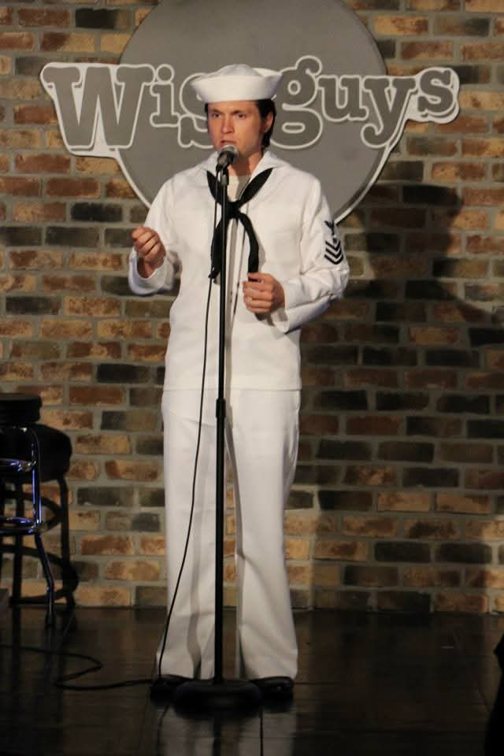

that's me!I grew up in Salt Lake — the only city in America where being a Jew makes you a gentile — came out in 2000 as Mitt Romney was saving the Winter Olympics, and graduated West High in 2003. After a brief stint with the Howard Dean and John Kerry campaigns, I did what any sensible gay teen would: I enlisted in the U.S. Navy.
I spent four years in the Western Pacific aboard USS Patriot, an Avenger-class minesweeper, visiting more than 30 countries on a mission to clear mines and, you know, meet people. Twink or Swim is about being closeted in a closet that's also a boat — and about how the Navy is hilarious if you survive it.
These days I'm based in Seattle, where I host and feature at Tacoma Comedy Club and Emerald City Comedy Club, and perform from San Francisco to Vancouver. I was selected twice for The Hollywood Comedy Store's Potluck Show, and have studied under Alice Fraser (The Bugle), Tiff Stevenson (HBO's Avenue 5), and Andrew Frank (Great Salt Lake Fringe, 2022).
I performed my first-ever stand-up set in 2012 at Wiseguys Comedy Club at Trolley Square — about a hundred feet from the Alliance Theatre, where Fringe lives.
Coming back to do an hour of comedy in the same building, for the city that raised the kid who joined the Navy, feels enormous. Fringe shows are original, uncensored, and unadjudicated — exactly the right room for this story.
Stand-alone building on the southwest corner of Trolley Square — the same building where I did my first stand-up set in 2012. Specific show times will be announced when the 2026 Fringe program drops.
Tickets through the official Fringe box office. Follow along on socials for behind-the-scenes Navy photos, clips, and the occasional unhinged announcement.